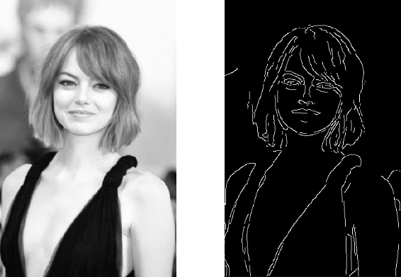

Engineering · C++17 · OpenCV · API design
Designing a public API for a C++ image pipeline
Computer vision code tends to rot in a predictable way. One engineer writes a working script: open an image, convert it to grayscale, blur it, run a detector, draw the result. A second engineer copies it, tweaks it, and misses a branch. A third copies the second. Within a year there are six slightly different pipelines, three of them leak memory on error paths, and a bug report says the detector is “random.” It is not random. The integrations are.
A public API is the structural answer to that decay. This article walks through how to design one for a C++17 image-processing library built on OpenCV, covering feature detection and the preprocessing it depends on, so that other teams can ask for behavior without managing buffers, ordering, or cleanup. It closes with a parallel from front-end work, because the underlying principle is the same.
1. The problem with free functions
OpenCV is a toolbox, and a toolbox gives you freedom you often do not want. A typical detection flow involves reading an image, converting color space, normalizing, suppressing noise, and then detecting features. Exposed as four free functions with overlapping arguments, each team will choose its own order and parameters. Some will forget to normalize, some will blur twice, and some will hold temporary matrices longer than needed.
The goal of the library is to move those decisions behind one boundary. The library owns the pipeline: the order of stages, the intermediate buffers, and the cleanup. The caller owns the request (which image, which detector, which options) and the result. That division makes the integration boring, which is exactly what you want from infrastructure.

2. The shape of a good surface
A narrow API is easier to keep stable. The public header should expose a small number of value types and one or two entry points, and nothing else. A few rules help:
- Hide the implementation. Use the pimpl idiom (a pointer to an opaque implementation class) so that headers do not change when internals do. This keeps compile times low for consumers and keeps ABI changes contained.
- Be careful with third-party types in public headers. If
cv::Matappears in your signatures, every consumer is coupled to your OpenCV version. Consider a thinImagevalue type (width, height, channels, a view over contiguous bytes) and convert at the boundary. If your consumers already use OpenCV and you accept the coupling, document the supported version range. - Prefer value semantics. Results are returned by value, using move semantics to avoid copies. Avoid out-parameters and raw owning pointers.
- Make the options an explicit struct with defaults, so adding an option does not change a function signature.
// include/vision/pipeline.hpp: the entire public surface
#pragma once
#include <cstdint>
#include <memory>
#include <string>
#include <variant>
#include <vector>
namespace vision {
struct ImageView { // non-owning view over caller memory
const std::uint8_t* data;
int width, height, channels;
std::size_t stride;
};
struct Keypoint { float x, y, size, response; };
enum class Error { EmptyImage, UnsupportedFormat, DetectorFailed };
struct Options {
enum class Detector { Orb, Fast, Harris } detector = Detector::Orb;
int max_features = 500;
bool normalize = true;
float blur_sigma = 1.2f;
};
using Result = std::variant<std::vector<Keypoint>, Error>;
class Pipeline {
public:
explicit Pipeline(Options opts = {});
~Pipeline();
Pipeline(Pipeline&&) noexcept;
Pipeline& operator=(Pipeline&&) noexcept;
Pipeline(const Pipeline&) = delete;
Pipeline& operator=(const Pipeline&) = delete;
Result detect(const ImageView& image);
private:
struct Impl;
std::unique_ptr<Impl> impl_;
};
} // namespace visionWith this surface, a caller writes pipeline.detect(view) and handles a vector of keypoints or an error. There is no cleanup function to forget and no stage ordering to get wrong.
3. RAII: making cleanup impossible to forget
People do not remember cleanup functions. Destructors run anyway. The central implementation rule is that every resource has an owner whose lifetime ends the resource. In an image pipeline, that includes working matrices, scratch buffers, detector objects, and any handles the stages acquire.
A stage that allocates in its constructor and releases in its destructor is safe across early returns, exceptions, and the extra branch someone adds during a bug fix and forgets to clean up. Prefer std::unique_ptr for ownership, std::vector for buffers, and avoid manual new and delete. OpenCV’s own cv::Mat is reference-counted, so be explicit about when you share data and when you deep-copy. Pass-by-const-reference does not copy, but an accidental cv::Mat b = a; followed by an in-place write aliases the same pixels.
For scratch buffers, a reusable workspace owned by the pipeline avoids per-call allocation in hot loops: allocate once at the maximum size you have seen, and reuse it. That is a performance decision and a lifetime decision at the same time, and RAII keeps both in one place.
4. Stages and templates, without inheritance for its own sake
Internally, the pipeline is a short sequence: decode or wrap, convert to grayscale, optionally normalize contrast, suppress noise, detect, and filter. Each stage has the same shape, taking an input and producing an output, and that is where templates earn their place. A stage can be modeled as a callable with a known input and output type, composed at compile time, instead of a virtual base class with a runtime registry nobody needs.
Use virtual dispatch where behavior truly varies at runtime, such as selecting a detector from options, and templates or plain functions where it does not. A hierarchy introduced to match a diagram is a cost you pay on every future change.
5. Errors are part of the API
Decide on an error strategy once. Exceptions are idiomatic in C++, but many vision libraries are consumed from code compiled with exceptions disabled or across language boundaries. A std::variant or an expected-style result type makes failure explicit in the signature and works in both worlds. Whichever you choose, document the failure modes next to the function:
- What does the call return for an empty image? An error, not a crash.
- What does it return when the detector finds nothing? An empty vector, not an error. “No features” is a valid outcome.
- Which failures are the caller’s fault (bad dimensions, unsupported channel count), and which are the library’s (allocation failure)?
Those sentences are the API as much as the header file is. Write them as tests, too: one for each documented behavior.
6. Threading and performance
State the thread-safety contract plainly. A reasonable default: a Pipeline instance is not safe for concurrent use, but separate instances are independent, so callers create one per worker thread. That keeps the implementation free of locks and lets each instance own its workspace. If you need a shared pool, build it on top.
Measure before optimizing. Profile with realistic image sizes, watch memory bandwidth (most preprocessing is memory-bound), and look for avoidable copies at the boundary between your ImageView and OpenCV’s Mat: wrapping existing memory in a Mat header costs nothing, while cloning does. Expose parameters that trade quality for speed (resolution, feature count) as options instead of hard-coding them.
7. Building and shipping a native library
A native library that only compiles on its author’s machine is not a library yet. Treat the build as part of the product:
- Use CMake with exported targets so consumers can
find_packagethe library and link a namespaced target. - Keep Bash build and setup scripts dull on purpose: create the build directory, configure the agreed compiler flags and OpenCV location, build, run tests, and install. A teammate should be able to read the script in a minute.
- Pin the supported compiler and OpenCV versions in documentation and in CI, and build against more than one.
- Compile with warnings as errors in CI, and run the test suite under AddressSanitizer and UndefinedBehaviorSanitizer. Leaks and out-of-bounds reads are exactly the bugs a pipeline library accumulates.
#!/usr/bin/env bash
set -euo pipefail
BUILD_DIR="${BUILD_DIR:-build}"
cmake -S . -B "$BUILD_DIR" \
-DCMAKE_BUILD_TYPE=RelWithDebInfo \
-DCMAKE_CXX_STANDARD=17 \
-DVISION_ENABLE_SANITIZERS=ON
cmake --build "$BUILD_DIR" -j"$(nproc)"
ctest --test-dir "$BUILD_DIR" --output-on-failure8. Testing an image pipeline
Image code needs tests that respect its nature. Three layers work well:
- Unit tests for each stage on tiny synthetic images (a white square on black, a gradient) where the right answer is obvious.
- Golden-image tests that run the pipeline on a small fixed set of real images and compare keypoints against stored results, with a tolerance. Detectors are not bit-exact across platforms, so compare statistics (count within a range, positions within a few pixels) instead of exact bytes.
- Failure-mode tests for each documented behavior: empty input, a single-channel image, a very large image, an image with no features.
When a bug is found downstream, add its image to the golden set. That is how the library gets more reliable over time.
9. The same principle in a React 18 migration
The same ownership question appears in front-end modernization. Moving a legacy UI to React 18 is not a version bump in a lockfile. Concurrent rendering and the move from class lifecycles to hooks change when code runs: effects can run twice in development under StrictMode, renders can be interrupted and repeated, and state updates are batched differently. Code that quietly relied on the old lifecycle breaks in ways that look random, and some of it breaks in only one browser.
The discipline is the same as in the library: find the intermediate state and put it behind a contract. In the pipeline, the intermediate state is a buffer. In the React app, it is a render that assumed it would run exactly once. Make effects idempotent with proper cleanup (the front-end version of RAII), keep side effects out of render, and fix browser-specific failures before calling the migration stable. A migration that is green in one engine and broken in another is a demo with a favorite browser.
10. Practice versus product
Engineers who have worked hundreds of algorithm problems in C++ (trees, graphs, dynamic programming) have a real advantage: they can hold a structure in their head. But a library is judged differently. A graph problem tells you whether you can reason about a structure; a public API tells you whether someone else can use the structure without reading your mind. Both matter, and they are different skills. The second one is built out of boring decisions: a narrow header, an explicit error type, documented edge cases, a build anyone can run.
If you are designing such a library today, start from the failure modes. Write down what the call does with an empty image, what it does when nothing is detected, and whose fault each error is. Then keep the surface narrow. Teams adopt a library because it stays boring at the boundary.